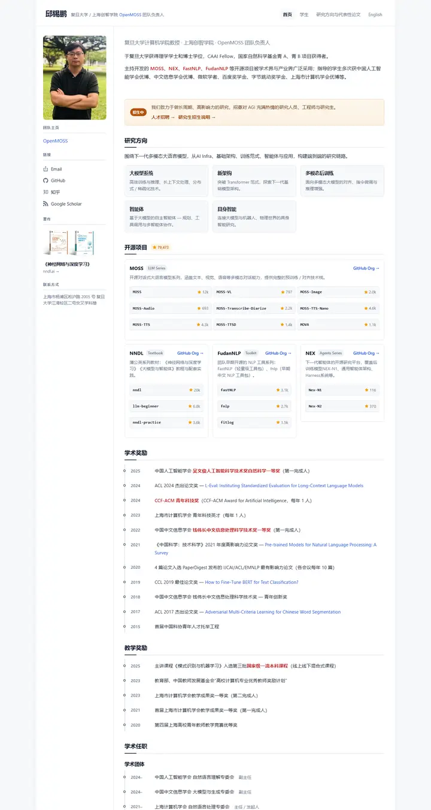
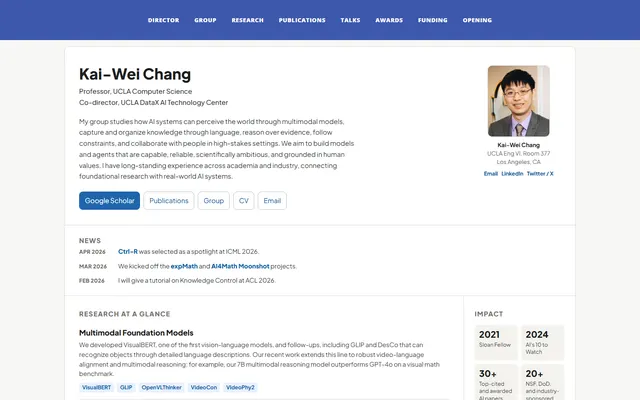

Xipeng Qiu
スレート色の机に置かれた一枚の白い紙。経歴のサイドバー、研究とリポジトリを収めたスレートグレーのカード、クリムゾンの強調が入った受賞歴の点線タイムライン。

表示されたページと照合済みです。
選んだ理由
中国語ページとしてよく仕上がったレイアウトです。左のプロフィールレール、研究領域のカード、スター数付きのオープンソースリポジトリのカード、受賞歴の点線タイムラインが、本当の意味での変化を与えています。
以下の説明と DESIGN.md 本文は英語です。コーディングエージェントが同じ一つの版を読めるよう、翻訳していません。
概要
カラーパレット
タイポグラフィ
system sans stack
Xipeng Qiu, large language models
Abstract · Method · Results · BibTeX — 0123456789
system mono
Xipeng Qiu, large language models
Abstract · Method · Results · BibTeX — 0123456789
余白と形
ページの構成要素
ガイドライン
似たスタイル

Kai-Wei Chang
学科の掲示板を整ったダッシュボードに仕立てたもの。一枚の白いパネルがヒーロー、ニュース帯、研究カラム、統計タイルのサイドバーに区切られ、ロイヤルブルーのバーで縁取られている。

Amir Bar
Imperial ブルーの端正な教員案内。白地に Inter、ピル型のリンク、手を伸ばすと数ピクセル浮き上がる論文カード。

Anagh Malik
アプリコットで温めた Barron の表。14px の Lato、オレンジに光る青いリンク、大事な論文は午後遅くの光の帯の中に収まっている。

Christoph Feichtenhofer
学会ホールの横断幕のような Facebook ブルーの帯に続き、赤字の論文名、緑の掲載先、両端揃えのグレーの要旨が長い台帳のように並ぶ。

David B. Lindell
丁寧な編集者が組んだラボノート。Source Serif の本文、Source Sans のラベル、澄んだ青ひとつ、そしてどの論文にも写真が添えて綴じてある。

David Novotny
夕暮れの港と静かな閲覧室。ティールからミッドナイトへの固定パネルに右揃えの連絡先、白地には柔らかなグレーの文字とタンジェリン色のリンク。